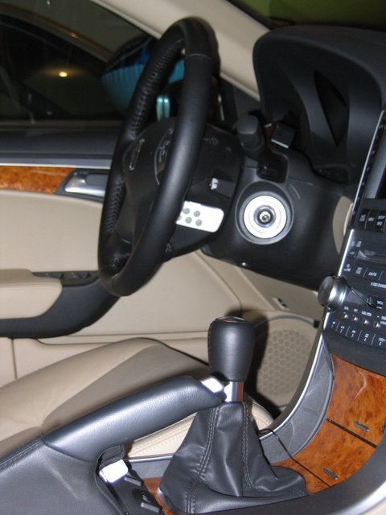
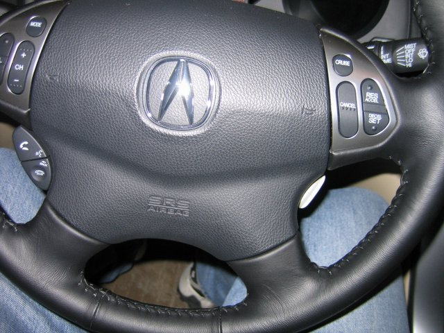
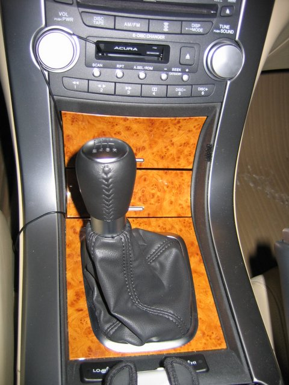
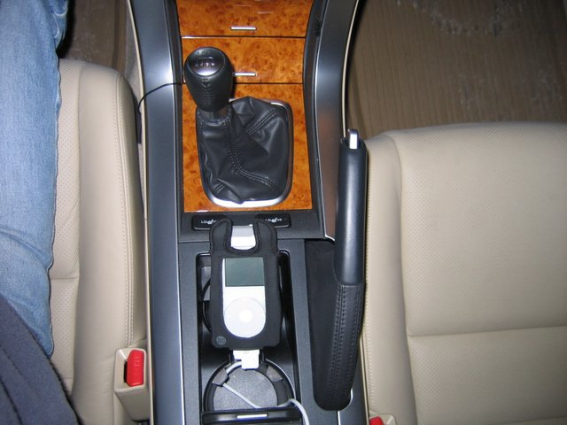
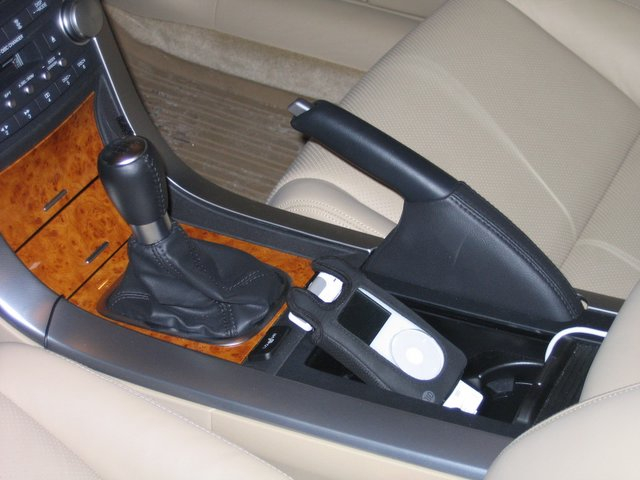

Simple iPod Install for my 2005 Acura TL
Parts:
First, I removed the clip from the Airclick remote control unit and
applied a sticky velcro strip to it and then the matching velcro
fastener to the side of the steering wheel in the same position that
the voice recognition prompter is located on the opposite side of the
steering wheel. The idea is that I wanted to be able to change
songs in the same way I prompt the voice recognition system -- except
with the other hand. I also didn't want to have to take my eyes
off the road. The feel is pretty intuitive -- just use two
fingers and feel down. The first two buttons are for volume (not
used) and the next to are for song forward and back.

The remote is barely visible from straight on. Perhaps if I've
nothing better to do, I might paint it black to make it look more
integrated into the interior.

I plugged the Belkin charger into the cigarette lighter socket inside
the armrest. (Ignore the old iPod charger and phone charger
sitting in the armrest cubbyspace). Note that I thread the dock
connector wire through the space in the corner of where the lower cover
fits -- there is a small space there you can position the wire so that
it is not pinched when the armrest compartments are fully shut.
Note the thin black wire for the cassette adapter threaded through the
existing hole.
Off topic: I also threaded the wires for the V1 and V1 remote unit
through the same hole as for the cassette adapter.
The cassette adapter wire is threaded around the volume knob and
through the sides of the cubby spaces (pinched to keep them tight) and
then threaded to the side of the center console (out of sight) and then
into the center armrest where it connects to the Belkin audio-out
connector. I turned the tape player on, set volume to 10 and then
adjusted the amplifier on the Belkin charger to max (you get
distortion) and then backed it down until there was no
distortion. I did this with several songs -- some loud, some
soft, etc.

The iPod is set inside the cup holder; it seems to be held in place
pretty snuggly due to the padding provided by the DLO leather jacket
and shape of the folds of the wire and the position of the dock
connector relative the space between the two cupholder spaces. I
keep the backlight set to "Always On" so that at night, I can view what
song is playing; this should not be an issue with draining the battery
because it's now being charged. You can close the cupholder space
as much as you want to conceal as much wire as you care to. I'd
love the be able to fully conceal it but don't know how yet.

